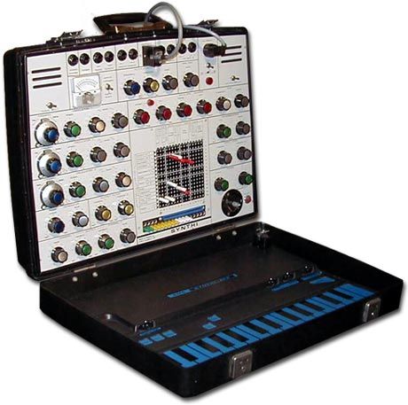
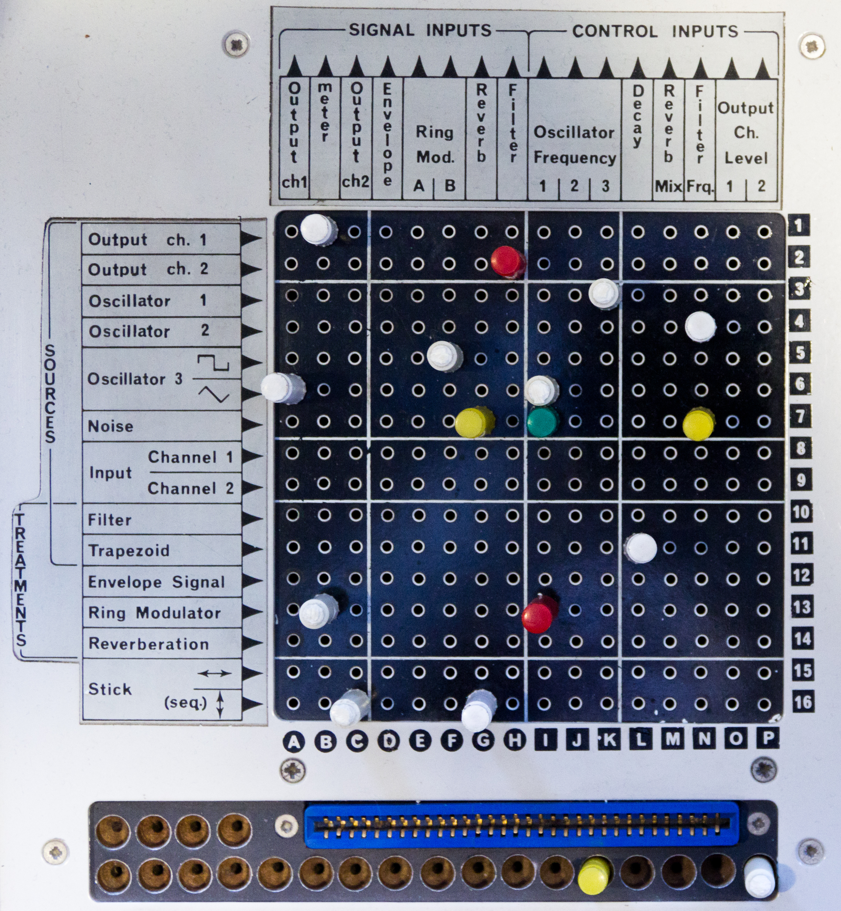

EMS Synthi AKS
A synthesizer in a briefcase whose programs are pins and whose keyboard is a touchplate

Overview
The EMS Synthi AKS is a portable analog synthesizer built by Electronic Music Studios (London), the company Peter Zinovieff founded in 1969 with designer David Cockerell and composer Tristram Cary. The AKS combined the Synthi A — the VCS3's circuitry repackaged into a Spartanite briefcase — with the KS keyboard/sequencer module built into the lid, debuting in March 1972 at £420. It was the "portable studio in a briefcase": battery powered, with a small speaker, so an entire synthesizer could be carried to a gig. It remained in the EMS catalogue through the museum's window — the 1979 product guide lists it at £1,452 — and EMS's successor company continued building occasional units into the mid-1980s.
Its two signature interfaces are both physically unusual. On the synth face is a pin-matrix patch panel: a grid of sockets into which the player pushes resistive pins (red and white 2,700 Ω pins for full-level routing, green 68,000 Ω attenuating pins) to connect modules — the pins themselves are the patch program. In the lid, a 30-note, two-and-a-half-octave flat touchplate keyboard has no moving parts; touching a printed contact triggers a note via finger capacitance (10–100 pF on each plate), with position-sweeping that varies pulse width and a piezoelectric crystal that gives a velocity "click." A 256-step digital sequencer is recorded by touching the Record pad and playing the touch keyboard in real time. Pink Floyd's "On the Run" (Dark Side of the Moon, 1973) was famously recorded on an AKS; Brian Eno, Tangerine Dream, Klaus Schulze, and Cabaret Voltaire were among the many users.
Deep dive
The pin matrix is a tangible programming surface. Signal routing on the Synthi is done not by patch cords but by pushing pins into a printed grid of sockets; each pin position electrically connects one circuit node to another, with the pin's resistance value choosing the signal level. The pattern of pins in the matrix IS the patch — read it back and you can see the instrument's wiring. It is the same plugboard idea as a telephone exchange or an IBM control panel, applied to sound, and a direct ancestor of the tangible-programming ideas the museum collects elsewhere.
The AKS keyboard is a flat printed circuit board — 30 touch plates in two and a half octaves, with no levers, springs, or contacts in the piano sense. Touch triggers a note capacitively: a finger on a plate adds 10–100 pF and flips a TTL multiplexer input, latching the note (highest note wins). The design allowed "dynamic" playing: sweeping a finger along a plate changes pulse width for pitch, and a piezoelectric crystal produces a velocity "click" when a key is struck. Record, Play, Random (a spin-and-touch random note selector) and Transposition pads complete the lid's controls.
The KS digi-sequencer stores 256 events in 6-bit shift-register memory (5 bits for the note, 1 bit for the trigger). Programming means performing: press the Record pad and play the touch keyboard in real time while the sequence is clocked into memory at a variable rate (from 700 ms to 100 seconds for a full cycle); then Play recirculates the stored phrase, with a skip mode that ignores empty storage. The sequence is a recording of your fingers on a touchplate — a bridge between performance and program, years before step-entry sequencing culture.
Alan Parsons told Sound on Sound that the "On the Run" sequence on Dark Side of the Moon was "laboriously programmed using the AKS's membrane keyboard," then played back at high speed for the famous 8/8 sprint across the album. Eno used EMS instruments through Roxy Music and his ambient work; Tangerine Dream, Klaus Schulze, and Cabaret Voltaire carried the AKS on stage and into studios through the late 1970s. Depeche Mode's Alan Wilder remembered it fondly on Music for the Masses (1987): "it comes in a briefcase, like a businessman's case." The AKS is a boundary case for the museum's 1976–1992 window — launched 1972, it was on sale and in active use throughout the late 1970s.
The museum's music exhibits program by numeric keypad (Roland MC-8), step buttons (TR-808), knobs and sliders (TB-303), light pen (Fairlight), strings (SynthAxe), or mallets (Radio Drum). None program by pushing pins into a socket grid, and none play a flat printed capacitance board as a keyboard. The AKS also differs from the museum's Cracklebox (a touch-noise box, not a programmable instrument): the AKS is a complete instrument whose primary interfaces are a plugboard and a touchplate.
Team & pioneers
- EMS (Electronic Music Studios) London. Founded 1969 by Peter Zinovieff, David Cockerell, and Tristram Cary; makers of the VCS3, Synthi A, and Synthi AKS.
- Peter Zinovieff. Founder and financier; composer and pioneer of computer music (MUSYS system).
- David Cockerell. Electronics designer of the AKS, the KS sequencer, and the separate EMS Sequencer 256.
- Tristram Cary. Composer; contributed to VCS3 industrial design.
- Gerry Rogers. Industrial design of the AKS briefcase.
Media


Sources
- Wikipedia — EMS Synthi AKS
- Wikipedia — EMS VCS 3
- Graham Hinton — A Guide to the EMS Product Range 1969–1979 (archived)
- Sound on Sound — All About EMS, Part 2 (Dec 2000, archived)
- EMS KS Repair Guide transcription (shift-register sequencer details)
- Vintage Synth Explorer — EMS Synthi AKS
- Wikimedia Commons — File:EMS Synthi AKS (opened).jpg